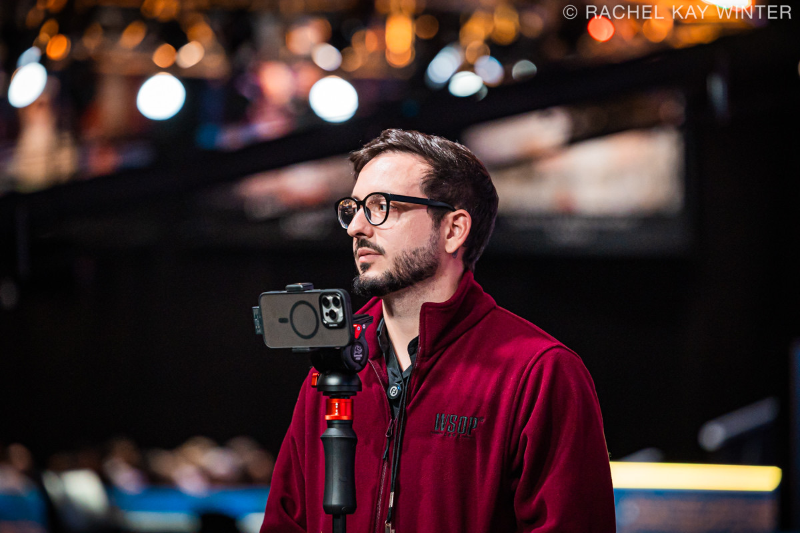

Jornalista especializado em poker e produtor de conteúdo com ampla vivência em coberturas internacionais de grande porte, incluindo edições consecutivas da World Series of Poker (WSOP) em Las Vegas.
Foco na entrega de reportagens em tempo real, análises de torneios, apuração de hand histories e otimização de conteúdo sob diretrizes avançadas de SEO para o mercado de iGaming e mídia especializada.